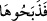

71. (Mûsâ) dedi ki: Allah şöyle buyuruyor: O, henüz boyunduruk altına
alınmayan, yer sürmeyen, ekin sulamayan, serbest dolaşan (salma), renginde hiç
alacası bulunmayan bir inektir. “İşte şimdi gerçeği anlattın” dediler ve bunun
üzerine (onu bulup) kestiler, ama az kalsın kesmeyeceklerdi.
Âyetteki “zelûl” (
) kelimesi emre mutî ve çok iş yapmaktan dolayı bitkin,
demektir. Bunun için “uysal hayvan” tabiri kullanılır. “Suûbe”nin tersidir ve ineğin bir
özelliğidir.
Âyetteki ilk “Lâ” ( ) olumsuzluk edâtıdır. İkinci “Lâ” ( ) ise zâid (fazla) olup
birincisini te’kid için gelmiştir. “Ekin sürmeyen, su taşımayan salma bir inektir”
mânâsına gelir. el-Keşşâf’ta böyle anlatılır.
İmâm Ebû Mansûr (r.a.) şöyle der: “Bu âyet o sığırın erkek olduğunu gösterir. Çünkü
ekin sürmek ve su çekmek gibi işler dişi hayvanlardan çok erkek hayvanların işidir. Bu
işleri öküzler yapar. “Sığır” anlamına gelen “bakara” kelimesine giden zamirlerin dişi
için kullanılan zamirler oluşu, kelimenin lâfzına i’tibârladır. “el-Bakara (
)”
kelimesinde sondaki “tâ” harfi, Ebû Yûsuf’un görüşünün aksine “dişilik” değil,
“teklik” ifâde eder. Ama yine de, o günkü insanların bugünkünün tersine, bu gibi işlerde
inekleri kullanması da mümkündür.”
Allah onu ayıp ve hastalıklardan uzak kılmıştır. Veya sahibleri onu çalışmaktan
alıkoymuştur, yahut rengi alacalıktan korunmuştur. Böylece onun sarılığına başka bir
renk karışmamıştır. Bu görüşü “hiçbir alacası da yoktur” ibâresi teyid etmektedir. Yâni
onun sarı rengini bozacak hiçbir aykırılık —boynuz ve tırnakları da dâhil— yoktur.
İşte o vakitte, -çünkü “el-an” (
)’de işâret mânâsı da vardır- bu özellikleri de
duyunca, tamam şimdi ineğin tüm hakîkatini bildirdi, artık onun hakkında hiçbir şüphe
kalmadı, dediler. (
) ve “onu kestiler.” Yâni: “Bütün bu vasıfları hâiz ineği bir
gencin yanında bulup derisince altın vererek satın aldılar ve onu kestiler. Az kalsın bunu
yapmayacaklardı.” Hülâsa o ineği, uzun bir süre bekledikten ve tembellik gösterdikten
sonra kestiler, demektir.
Denilmiştir ki, İsrâîloğulları kendilerine gelen bu emri tam kırk sene sonra yerine
getirdiler. Akıllı olan kimse kendisine emredileni hemen yapar, işin hikmetini,
araştırmayı bırakır. Çünkü tevhîdin gereği budur.
Mesnevî’de şöyle denilir:
Dost’un cemâl hayâlî, bizim gönlümüze nakşolmuştur,
O’nun yolunda kulluk ve can vermek bizim işimizdir.
el-Hikemü’l-Atâiyye’de şöyle denir: Kulluğuna halel getirecek beşerî sıfatların